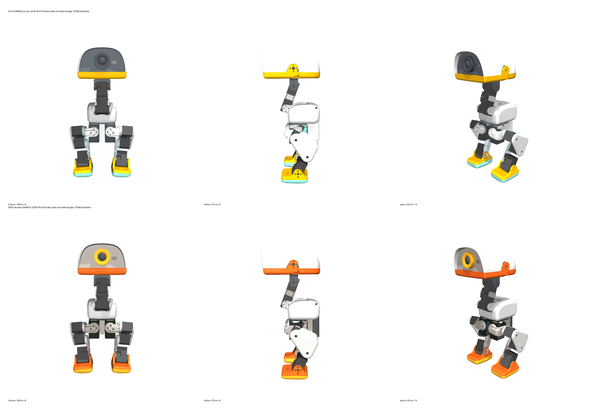

← Repository index · GOAL.md · SPEC.md
Microduck reverse-engineering · new sources · source 2
develop — what moved since the copy that seeded usThe same origin as every mesh and number in our model, one branch and 24 commits later. Fetched, pinned at 29e887e, licence quoted, then diffed file by file, mesh by mesh (cecad.meshcompare, SPEC.md §8 rule) and number by number against our 5946fd9 copy, our SPEC.md, joints.json and sim/microduck_ours.xml. Generated 2026-09-04 02:01 +0800 by tools/gen_upstream_develop.py from out/sources/*.json.
imu_bno site. Which one the built unit matches is CANNOT DETERMINE from the files (F5).SOURCE-COMMIT — reference/pollen-microduck-rl-develop/
=======================================================
repository : https://github.com/pollen-robotics/microduck_rl
branch : develop (origin/HEAD -> origin/develop at fetch time)
commit : 29e887ecfbf5d37144759e5a9f8a176dfb83d547
commit date : 2026-09-02 22:20:08 +0200 (Antoine Pirrone, "Merge pull request #30 from peterschade/sim-body-server")
fetched : 2026-09-03 23:11 +0800 by the microduck source-ingest lane (git clone --branch develop --filter=blob:none)
upstream path: src/mjlab_microduck/robot/microduck/ -> copied here as microduck/ (assets/ included, 43 STL + 43 .part)
src/mjlab_microduck/robot/microduck_constants.py, testbench_constants.py, xl330_test_bench/ -> copied alongside
README.md -> microduck_rl_README.md ; LICENSE -> LICENSE-Apache-2.0.txt ; AGENTS.md -> microduck_rl_AGENTS.md
last commit touching src/mjlab_microduck/robot/microduck/ : 5b63797c3189128c84f87a6f3740fe5452946f6a 2026-09-02 22:19:26 +0200
last commit touching src/mjlab_microduck/robot/microduck/assets/ : 8dfc08f33d408e62ca2e9d3ec107d0acbe747a91 2026-09-01 16:39:02 +0200
"chore: re-export all robot models from updated CAD (new colors)"
Onshape document (from every .part sidecar) : documentId 804927696f06d877f3f1803e
Onshape documentMicroversion of this export : 2f167ea7efece4caa36b89eb (all 43 .part files)
OUR PREVIOUS COPY (reference/pollen-microduck-rl/) was taken from commit 5946fd9cdbc58956424420153e51975af3b30d77
(2026-09-01 14:09:12 +0200, also on develop; research/02-repos-and-code.md:29). 24 commits separate the two;
the asset re-export 8dfc08f is 2.5 h after our pin. Every one of the 43 STLs differs byte-for-byte from our copy
(sha256, measured 2026-09-03); 4 STLs were removed upstream (left_upper_leg, right_upper_leg, trunk_shell_left,
trunk_shell_right — orphans from Onshape microversion 49900cb439825f734c36e098, element d6fcdccc8b25aaa256e7e213).
LICENCE — quoted verbatim from README.md at this commit (lines 258-261):
## License
This project is licensed under the Apache 2.0 License. See the [LICENSE](LICENSE) file for details.
3D model files are licensed under Creative Commons BY-SA-NC.
The README names NO version number for the Creative Commons licence and writes it "BY-SA-NC" (the canonical
CC name is BY-NC-SA). The LICENSE file in the repo is Apache-2.0 only; no CC licence text is shipped.
=> Cite as: "CC BY-SA-NC (no version stated), pollen-robotics/microduck_rl README.md:261 @ 29e887e".
ce-parts/microduck-eye-ring/iterations/v0.0.1/cad/part.py:6 says "CC BY-SA-NC 4.0" — the "4.0" is NOT in
the source and must not be asserted; component.json:15 has it right ("version not stated").
ATTRIBUTION: Pollen Robotics (Bordeaux), Antoine Pirrone (apirrone) — exported from Onshape by onshape-to-robot.
The licence lines, verbatim from README.md at this commit (line numbers are the file’s):
258: ## License 260: This project is licensed under the Apache 2.0 License. See the [LICENSE](LICENSE) file for details. 261: 3D model files are licensed under Creative Commons BY-SA-NC.
src/mjlab_microduck/robot/microduck/, 5946fd9..29e887eCounts: modified 89, unchanged 14, added 6, deleted 8, same 6, renamed 6. Every STL and every .part sidecar is “modified” (new Onshape microversion, re-decimated); the non-asset changes are listed in full.
| path | status | renamed from | old bytes | new bytes |
|---|---|---|---|---|
add_backlash.py | modified | 5867 | 5867 | |
allcollisions_contacts.xml | added | — | 576 | |
apartment.xml | added | — | 19911 | |
config_mjcf_allcollisions.json | modified | 2006 | 1496 | |
config_mjcf_groundcontact.json | added | — | 2006 | |
config_mjcf_groundcontact_backlash.json | renamed | config_mjcf_allcollisions_backlash.json | — | 2141 |
config_mjcf_groundcontact_rollers.json | renamed | config_mjcf_allcollisions_rollers.json | — | 2092 |
config_mjcf_groundcontact_rollers_backlash.json | renamed | config_mjcf_allcollisions_rollers_backlash.json | — | 2235 |
robot_allcollisions.xml | modified | 32898 | 43020 | |
robot_groundcontact.xml | added | — | 32904 | |
robot_groundcontact_backlash.xml | renamed | robot_allcollisions_backlash.xml | — | 34991 |
robot_groundcontact_rollers.xml | renamed | robot_allcollisions_rollers.xml | — | 35693 |
robot_groundcontact_rollers_backlash.xml | renamed | robot_allcollisions_rollers_backlash.xml | — | 37780 |
robot_walk.xml | modified | 32017 | 32023 | |
robot_walk_backlash.xml | modified | 34104 | 34110 | |
scene.xml | modified | 2350 | 2350 | |
scene_allcollisions.xml | added | — | 2350 | |
scene_apartment.xml | added | — | 2457 | |
scene_backlash.xml | modified | 2570 | 2570 | |
scene_ball.xml | modified | 1238 | 1238 | |
scene_rollers.xml | modified | 2439 | 2439 |
Commits between the two pins that touched this path:
5b63797 2026-09-02 Antoine Pirrone Merge branch 'develop' into sim-body-server08680d3 2026-09-01 apirrone feat: add true all-collisions robot model8dfc08f 2026-09-01 apirrone chore: re-export all robot models from updated CAD (new colors)8d5c18b 2026-09-01 apirrone refactor: rename "allcollisions" model family to "groundcontact"363b7ef 2026-08-31 apirrone No ground plane under the apartment: it flickers2069b55 2026-08-31 apirrone An apartment to walk around inSPEC.md §8: p95 surface distance <= 1.0 mm both ways AND bbox within 1.5 mm per axis; both trees x1000 (metres -> mm); no alignment. bbox in the part’s own file frame, mm, 4 dp; p95/max are surface distances in mm. “verts” = the two files carry the identical vertex set (a re-decimated mesh does not, yet its surface can still be 0.0000 mm away).
| mesh | verdict | old bbox size | new bbox size | Δsize | Δcentre | p95 old→new | p95 new→old | max | tris old→new | verts |
|---|---|---|---|---|---|---|---|---|---|---|
ankle_l_v1.stl | PASS | 39.4891 × 46.4981 × 25.4000 | 39.4891 × 46.4981 × 25.4000 | 0.0000 × 0.0000 × 0.0000 | 0.0000 × 0.0000 × 0.0000 | 0.0000 | 0.0000 | 0.0393 | 4718→4718 | same |
ankle_left.stl | PASS | 39.4891 × 36.5000 × 25.5000 | 39.4891 × 36.5000 × 25.5000 | 0.0000 × 0.0000 × 0.0000 | 0.0000 × 0.0000 × 0.0000 | 0.0000 | 0.0000 | 0.0000 | 4978→4978 | re-tri |
ankle_r_v1.stl | PASS | 39.4891 × 46.4973 × 25.4000 | 39.4891 × 46.4973 × 25.4000 | 0.0000 × 0.0000 × 0.0000 | 0.0000 × 0.0000 × 0.0000 | 0.0000 | 0.0000 | 0.1105 | 4714→4714 | same |
ankle_right.stl | PASS | 39.4891 × 36.5000 × 25.5000 | 39.4891 × 36.5000 × 25.5000 | 0.0000 × 0.0000 × 0.0000 | 0.0000 × 0.0000 × 0.0000 | 0.0000 | 0.0000 | 0.0000 | 4976→4976 | re-tri |
banana_pcb_locker.stl | PASS | 54.0501 × 3.8000 × 6.6524 | 54.0501 × 3.8000 × 6.6524 | 0.0000 × 0.0000 × 0.0000 | 0.0000 × 0.0000 × 0.0000 | 0.0000 | 0.0000 | 0.0000 | 1388→1388 | same |
bearing_roll.stl | PASS | 23.0000 × 3.0000 × 40.0000 | 23.0000 × 3.0000 × 40.0000 | 0.0000 × 0.0000 × 0.0000 | 0.0000 × 0.0000 × 0.0000 | 0.0000 | 0.0000 | 0.0000 | 2420→2420 | same |
bottom_head_shell.stl | PASS | 91.7630 × 116.7483 × 20.1363 | 91.7630 × 116.7483 × 20.1363 | 0.0000 × 0.0000 × 0.0000 | 0.0000 × 0.0000 × 0.0000 | 0.0000 | 0.0000 | 0.0525 | 20970→20970 | re-tri |
elec_rpi_robot_hat_pcb.stl | PASS | 65.0250 × 30.0250 × 0.8400 | 65.0250 × 30.0250 × 0.8400 | 0.0000 × 0.0000 × 0.0000 | 0.0000 × 0.0000 × 0.0000 | 0.0000 | 0.0000 | 0.0000 | 18856→18856 | same |
face_part.stl | PASS | 87.6507 × 12.5000 × 44.6265 | 87.6507 × 12.5000 × 44.6265 | 0.0000 × 0.0000 × 0.0000 | 0.0000 × 0.0000 × 0.0000 | 0.0000 | 0.0000 | 0.0000 | 11412→11412 | same |
foot_left.stl | PASS | 40.0855 × 54.0000 × 16.9090 | 40.0855 × 54.0000 × 16.9090 | 0.0000 × 0.0000 × 0.0000 | 0.0000 × 0.0000 × 0.0000 | 0.0000 | 0.0000 | 0.0263 | 19922→19922 | same |
foot_right.stl | PASS | 40.0855 × 54.0000 × 16.9090 | 40.0855 × 54.0000 × 16.9090 | 0.0000 × 0.0000 × 0.0000 | 0.0000 × 0.0000 × 0.0000 | 0.0000 | 0.0000 | 0.0077 | 19914→19952 | re-tri |
hip_l.stl | PASS | 32.4501 × 34.5000 × 19.0000 | 32.4501 × 34.5000 × 19.0000 | 0.0000 × 0.0000 × 0.0000 | 0.0000 × 0.0000 × 0.0000 | 0.0000 | 0.0000 | 0.0000 | 20970→20970 | same |
jaw.stl | PASS | 91.4158 × 68.7105 × 29.4477 | 91.4158 × 68.7105 × 29.4477 | 0.0000 × 0.0000 × 0.0000 | 0.0000 × 0.0000 × 0.0000 | 0.0000 | 0.0000 | 0.0000 | 9918→9918 | same |
jaw_soft.stl | PASS | 87.6737 × 32.2339 × 8.4376 | 87.6737 × 32.2339 × 8.4376 | 0.0000 × 0.0000 × 0.0000 | 0.0000 × 0.0000 × 0.0000 | 0.0000 | 0.0000 | 0.0000 | 6726→6726 | same |
left_shell.stl | PASS | 33.7145 × 80.8901 × 41.6905 | 33.7145 × 80.8901 × 41.6905 | 0.0000 × 0.0000 × 0.0000 | 0.0000 × 0.0000 × 0.0000 | 0.0000 | 0.0000 | 0.0000 | 20970→20970 | same |
leg.stl | PASS | 7.9500 × 20.0000 × 58.0000 | 7.9500 × 20.0000 × 58.0000 | 0.0000 × 0.0000 × 0.0000 | 0.0000 × 0.0000 × 0.0000 | 0.0000 | 0.0000 | 0.0000 | 14776→14776 | same |
lens.stl | PASS | 16.9400 × 18.9200 × 16.9400 | 16.9400 × 18.9200 × 16.9400 | 0.0000 × 0.0000 × 0.0000 | 0.0000 × 0.0000 × 0.0000 | 0.0000 | 0.0000 | 0.0000 | 1872→1872 | same |
m12_lens_holder.stl | PASS | 24.0000 × 14.8000 × 16.0000 | 24.0000 × 14.8000 × 16.0000 | 0.0000 × 0.0000 × 0.0000 | 0.0000 × 0.0000 × 0.0000 | 0.0000 | 0.0000 | 0.0000 | 10992→10992 | same |
motor_support.stl | PASS | 73.5000 × 54.2000 × 18.8000 | 73.5000 × 54.2000 × 18.8000 | 0.0000 × 0.0000 × 0.0000 | 0.0000 × 0.0000 × 0.0000 | 0.0000 | 0.0000 | 0.0000 | 3616→3616 | same |
neck.stl | PASS | 2.0000 × 20.0000 × 11.0000 | 2.0000 × 20.0000 × 11.0000 | 0.0000 × 0.0000 × 0.0000 | 0.0000 × 0.0000 × 0.0000 | 0.0000 | 0.0000 | 0.0000 | 1468→1468 | same |
neck_pitch.stl | PASS | 35.0000 × 18.0000 × 27.6931 | 35.0000 × 18.0000 × 27.6931 | 0.0000 × 0.0000 × 0.0000 | 0.0000 × 0.0000 × 0.0000 | 0.0000 | 0.0000 | 0.0000 | 7120→7120 | same |
noenoeil.stl | PASS | 30.0000 × 9.5000 × 30.0000 | 30.0000 × 9.5000 × 30.0000 | 0.0000 × 0.0000 × 0.0000 | 0.0000 × 0.0000 × 0.0000 | 0.0000 | 0.0000 | 0.0000 | 984→984 | same |
np_f970.stl | PASS | 38.6085 × 20.5755 × 70.8086 | 38.6085 × 20.5755 × 70.8086 | 0.0000 × 0.0000 × 0.0000 | 0.0000 × 0.0000 × 0.0000 | 0.0000 | 0.0000 | 0.0000 | 20970→20970 | same |
pcb__raspberry_pi_zero_2_w.stl | PASS | 65.0000 × 1.6000 × 30.0000 | 65.0000 × 1.6000 × 30.0000 | 0.0000 × 0.0000 × 0.0000 | 0.0000 × 0.0000 × 0.0000 | 0.0000 | 0.0000 | 0.0052 | 20970→20970 | re-tri |
power_support.stl | PASS | 54.5000 × 17.0000 × 83.4898 | 54.5000 × 17.0000 × 83.4898 | 0.0000 × 0.0000 × 0.0000 | 0.0000 × 0.0000 × 0.0000 | 0.0000 | 0.0000 | 0.0000 | 12832→12832 | same |
right_shell.stl | PASS | 31.7645 × 80.8979 × 41.6927 | 31.7645 × 80.8979 × 41.6927 | 0.0000 × 0.0000 × 0.0000 | 0.0000 × 0.0000 × 0.0000 | 0.0000 | 0.0000 | 0.0000 | 20970→20970 | same |
rim.stl | PASS | 7.6000 × 20.2000 × 20.2000 | 7.6000 × 20.2000 × 20.2000 | 0.0000 × 0.0000 × 0.0000 | 0.0000 × 0.0000 × 0.0000 | 0.0000 | 0.0000 | 0.0000 | 2304→2304 | same |
roller_blade.stl | PASS | 40.5414 × 72.9995 × 30.3788 | 40.5414 × 72.9995 × 30.3788 | 0.0000 × 0.0000 × 0.0000 | 0.0000 × 0.0000 × 0.0000 | 0.0000 | 0.0000 | 0.0000 | 20968→20968 | same |
seeed_bearing__configuration__22x16x4.stl | PASS | 22.0000 × 22.0000 × 4.0000 | 22.0000 × 22.0000 × 4.0000 | 0.0000 × 0.0000 × 0.0000 | 0.0000 × 0.0000 × 0.0000 | 0.0000 | 0.0000 | 0.0000 | 20970→20970 | same |
seeed_bearing__configuration_default.stl | PASS | 15.0000 × 15.0000 × 3.0000 | 15.0000 × 15.0000 × 3.0000 | 0.0000 × 0.0000 × 0.0000 | 0.0000 × 0.0000 × 0.0000 | 0.0000 | 0.0000 | 0.0000 | 20970→20970 | same |
soft_mouth_top.stl | PASS | 87.8220 × 32.5651 × 3.2762 | 87.8220 × 32.5651 × 3.2762 | 0.0000 × 0.0000 × 0.0000 | 0.0000 × 0.0000 × 0.0000 | 0.0000 | 0.0000 | 0.0182 | 7870→7870 | same |
sole_left.stl | PASS | 41.0985 × 54.0000 × 12.9074 | 41.0985 × 54.0000 × 12.9074 | 0.0000 × 0.0000 × 0.0000 | 0.0000 × 0.0000 × 0.0000 | 0.0000 | 0.0000 | 0.0000 | 15788→15788 | same |
sole_right.stl | PASS | 41.0987 × 54.0000 × 12.9076 | 41.0987 × 54.0000 × 12.9076 | 0.0000 × 0.0000 × 0.0000 | 0.0000 × 0.0000 × 0.0000 | 0.0000 | 0.0000 | 0.0076 | 15888→15902 | re-tri |
speaker.stl | PASS | 35.0000 × 25.0000 × 7.0000 | 35.0000 × 25.0000 × 7.0000 | 0.0000 × 0.0000 × 0.0000 | 0.0000 × 0.0000 × 0.0000 | 0.0000 | 0.0000 | 0.0000 | 12→12 | same |
tire.stl | PASS | 7.6000 × 30.0000 × 30.0000 | 7.6000 × 30.0000 × 30.0000 | 0.0000 × 0.0000 × 0.0000 | 0.0000 × 0.0000 × 0.0000 | 0.0000 | 0.0000 | 0.0000 | 7056→7056 | same |
top_head_shell.stl | PASS | 91.7595 × 122.6900 × 46.3361 | 91.7595 × 122.6900 × 46.3361 | 0.0000 × 0.0000 × 0.0000 | 0.0000 × 0.0000 × 0.0000 | 0.0000 | 0.0000 | 0.0000 | 16120→16120 | same |
trunk_base.stl | PASS | 57.0000 × 36.0000 × 3.0000 | 57.0000 × 36.0000 × 3.0000 | 0.0000 × 0.0000 × 0.0000 | 0.0000 × 0.0000 × 0.0000 | 0.0000 | 0.0000 | 0.0000 | 3698→3698 | same |
upper_leg_left.stl | PASS | 28.0000 × 47.6594 × 60.9966 | 28.0000 × 47.6594 × 60.9966 | 0.0000 × 0.0000 × 0.0000 | 0.0000 × 0.0000 × 0.0000 | 0.0000 | 0.0000 | 2.3557 | 12250→12250 | re-tri |
upper_leg_right.stl | PASS | 28.0000 × 47.6594 × 60.9966 | 28.0000 × 47.6594 × 60.9966 | 0.0000 × 0.0000 × 0.0000 | 0.0000 × 0.0000 × 0.0000 | 0.0000 | 0.0000 | 1.9666 | 12250→12250 | re-tri |
upper_leg_rigidity_plate.stl | PASS | 1.0000 × 44.9965 × 58.0577 | 1.0000 × 44.9965 × 58.0577 | 0.0000 × 0.0000 × 0.0000 | 0.0000 × 0.0000 × 0.0000 | 0.0000 | 0.0000 | 0.0000 | 3600→3600 | same |
xl330.stl | PASS | 29.0000 × 20.0000 × 34.0000 | 29.0000 × 20.0000 × 34.0000 | 0.0000 × 0.0000 × 0.0000 | 0.0000 × 0.0000 × 0.0000 | 0.0000 | 0.0000 | 0.0000 | 4126→4126 | same |
yaw2roll.stl | PASS | 23.0000 × 25.8000 × 20.5000 | 23.0000 × 25.8000 × 20.5000 | 0.0000 × 0.0000 × 0.0000 | 0.0000 × 0.0000 × 0.0000 | 0.0000 | 0.0000 | 0.0000 | 12404→12404 | same |
yaw_roll_motion.stl | PASS | 34.0000 × 35.9000 × 22.5000 | 34.0000 × 35.9000 × 22.5000 | 0.0000 × 0.0000 × 0.0000 | 0.0000 × 0.0000 × 0.0000 | 0.0000 | 0.0000 | 0.0000 | 5814→5814 | same |
| removed STL | survivor | verdict | removed bbox size | survivor bbox size | p95 removed→survivor | p95 survivor→removed | tris |
|---|---|---|---|---|---|---|---|
left_upper_leg.stl | upper_leg_left.stl | PASS | 28.0000 × 47.6594 × 60.9966 | 28.0000 × 47.6594 × 60.9966 | 0.0000 | 0.0000 | 12250 / 12250 |
right_upper_leg.stl | upper_leg_right.stl | PASS | 28.0000 × 47.6594 × 60.9966 | 28.0000 × 47.6594 × 60.9966 | 0.0000 | 0.0000 | 12250 / 12250 |
trunk_shell_left.stl | left_shell.stl | FAIL | 30.9000 × 82.4292 × 35.6959 | 33.7145 × 80.8901 × 41.6905 | 2.9439 | 8.0664 | 14166 / 20970 |
trunk_shell_right.stl | right_shell.stl | FAIL | 33.5000 × 82.4292 × 34.6959 | 31.7645 × 80.8979 × 41.6927 | 2.9143 | 7.5204 | 11358 / 20970 |
Total inertial mass: pin 737.2431 g · develop 737.2431 g · ours 737.2431 g. Defaults/actuators identical: True · keyframes identical: True · geom placements changed: 0.
| joint | pin range (deg) | develop range (deg) | Δ (deg) | ours (deg) | ours vs develop |
|---|---|---|---|---|---|
head_pitch | [-90.0, 90.0] | [-90.0, 90.0] | [0.0, 0.0] | [-90.0, 90.0] | SAME |
head_roll | [-25.0, 25.0] | [-25.0, 25.0] | [0.0, 0.0] | [-25.0, 25.0] | SAME |
head_yaw | [-170.0, 170.0] | [-170.0, 170.0] | [0.0, 0.0] | [-170.0, 170.0] | SAME |
left_ankle | [-90.0, 90.0] | [-90.0, 90.0] | [0.0, 0.0] | [-90.0, 90.0] | SAME |
left_hip_pitch | [-90.0, 90.0] | [-90.0, 90.0] | [0.0, 0.0] | [-90.0, 90.0] | SAME |
left_hip_roll | [-22.0, 22.0] | [-22.0, 22.0] | [0.0, 0.0] | [-22.0, 22.0] | SAME |
left_hip_yaw | [-25.0, 30.0] | [-25.0, 30.0] | [0.0, 0.0] | [-25.0, 30.0] | SAME |
left_knee | [-90.0, 90.0] | [-90.0, 90.0] | [0.0, 0.0] | [-90.0, 90.0] | SAME |
neck_pitch | [-90.0, 60.0] | [-90.0, 60.0] | [0.0, 0.0] | [-90.0, 60.0] | SAME |
right_ankle | [-90.0, 90.0] | [-90.0, 90.0] | [0.0, 0.0] | [-90.0, 90.0] | SAME |
right_hip_pitch | [-90.0, 90.0] | [-90.0, 90.0] | [0.0, 0.0] | [-90.0, 90.0] | SAME |
right_hip_roll | [-22.0, 22.0] | [-22.0, 22.0] | [0.0, 0.0] | [-22.0, 22.0] | SAME |
right_hip_yaw | [-30.0, 25.0] | [-30.0, 25.0] | [0.0, 0.0] | [-30.0, 25.0] | SAME |
right_knee | [-90.0, 90.0] | [-90.0, 90.0] | [0.0, 0.0] | [-90.0, 90.0] | SAME |
| body | pin mass (g) | develop mass (g) | Δ (g) | Δ CoM (mm) | ours (g) |
|---|---|---|---|---|---|
ankle_left | 30.0246 | 30.0246 | 0.0 | [0.0, 0.0, 0.0001] | 30.0246 |
ankle_right | 30.0251 | 30.0251 | 0.0 | [0.0, 0.0, 0.0] | 30.0251 |
bearing_roll | 23.0406 | 23.0406 | 0.0 | [0.0, 0.0, 0.0] | 23.0406 |
hip_l | 6.1893 | 6.1893 | 0.0 | [0.0, 0.0, 0.0] | 6.1893 |
hip_l_2 | 6.1893 | 6.1893 | 0.0 | [0.0, 0.0, 0.0] | 6.1893 |
jaw_soft | 188.766 | 188.766 | 0.0 | [0.0, 0.0, 0.0] | 188.766 |
leg | 21.5844 | 21.5844 | 0.0 | [0.0, 0.0, 0.0] | 21.5844 |
leg_2 | 21.5844 | 21.5844 | 0.0 | [0.0, 0.0, 0.0] | 21.5844 |
neck | 36.8414 | 36.8414 | 0.0 | [-0.0, 0.0, 0.0] | 36.8414 |
neck_pitch | 5.72 | 5.72 | 0.0 | [0.0, 0.0, 0.0] | 5.72 |
trunk_base | 199.224 | 199.224 | 0.0 | [0.0, 0.0, 0.0] | 199.224 |
upper_leg_left | 48.2067 | 48.2067 | 0.0 | [0.0, 0.0, 0.0] | 48.2067 |
upper_leg_right | 48.2067 | 48.2067 | 0.0 | [0.0, 0.0, 0.0] | 48.2067 |
yaw2roll | 23.0406 | 23.0406 | 0.0 | [0.0, 0.0, 0.0] | 23.0406 |
yaw_roll_motion | 48.6 | 48.6 | 0.0 | [0.0, 0.0, 0.0] | 48.6 |

| material | pin | develop | verdict | ours (sim/microduck_ours.xml) |
|---|---|---|---|---|
ankle_left_material | #fab601 | #ff671f | CHANGED | 0.980392 0.713725 0.00392157 1 |
ankle_right_material | #fab601 | #ff671f | CHANGED | 0.980392 0.713725 0.00392157 1 |
banana_pcb_locker_material | #a5a5a5 | #a5a5a5 | SAME | 0.647059 0.647059 0.647059 1 |
bearing_roll_material | #43484d | #212721 | CHANGED | 0.262745 0.282353 0.301961 1 |
bottom_head_shell_material | #fab601 | #ff671f | CHANGED | 0.980392 0.713725 0.00392157 1 |
elec_rpi_robot_hat_pcb_material | #507c69 | #507c69 | SAME | 0.313725 0.486275 0.411765 1 |
face_part_material | #596066 | #aca39a | CHANGED | 0.34902 0.376471 0.4 1 |
foot_left_material | #fab601 | #ff671f | CHANGED | 0.980392 0.713725 0.00392157 1 |
foot_right_material | #fab601 | #ff671f | CHANGED | 0.980392 0.713725 0.00392157 1 |
hip_l_material | #e6e6e6 | #aca39a | CHANGED | 0.901961 0.901961 0.901961 1 |
jaw_material | #fab601 | #ff671f | CHANGED | 0.980392 0.713725 0.00392157 1 |
jaw_soft_material | #d9c1dd | #d9c1dd | SAME | 0.85098 0.756863 0.866667 1 |
left_shell_material | #cccccc | #cccccc | SAME | 0.8 0.8 0.8 1 |
leg_material | #cfdbe5 | #aca39a | CHANGED | 0.811765 0.858824 0.898039 1 |
lens_material | #43484d | #43484d | SAME | 0.262745 0.282353 0.301961 1 |
m12_lens_holder_material | #43484d | #43484d | SAME | 0.262745 0.282353 0.301961 1 |
motor_support_material | #43484d | #212721 | CHANGED | 0.262745 0.282353 0.301961 1 |
neck_material | #cccccc | #aca39a | CHANGED | 0.8 0.8 0.8 1 |
neck_pitch_material | #596066 | #596066 | SAME | 0.34902 0.376471 0.4 1 |
noenoeil_material | #43484d | #f4af23 | CHANGED | 0.262745 0.282353 0.301961 1 |
np_f970_material | #e6e6e6 | #4d4d4d | CHANGED | 0.901961 0.901961 0.901961 1 |
pcb__raspberry_pi_zero_2_w_material | #7f7f7f | #7f7f7f | SAME | 0.498039 0.498039 0.498039 1 |
power_support_material | #e6e6e6 | #aca39a | CHANGED | 0.901961 0.901961 0.901961 1 |
right_shell_material | #cccccc | #d9d9d6 | CHANGED | 0.8 0.8 0.8 1 |
seeed_bearing__configuration__22x16x4_material | #b6c2cc | #cfdbe5 | CHANGED | 0.713725 0.760784 0.8 1 |
seeed_bearing__configuration_default_material | #b6c2cc | #cfdbe5 | CHANGED | 0.713725 0.760784 0.8 1 |
soft_mouth_top_material | #d9c1dd | #d9c1dd | SAME | 0.85098 0.756863 0.866667 1 |
sole_left_material | #89dad3 | #f4af23 | CHANGED | 0.537255 0.854902 0.827451 1 |
sole_right_material | #89dad3 | #f4af23 | CHANGED | 0.537255 0.854902 0.827451 1 |
speaker_material | #4b4a4a | #4b4a4a | SAME | 0.294118 0.290196 0.290196 1 |
top_head_shell_material | #e6e6e6 | #d9d9d6 | CHANGED | 0.901961 0.901961 0.901961 1 |
trunk_base_material | #596066 | #212721 | CHANGED | 0.34902 0.376471 0.4 1 |
upper_leg_left_material | #dddddd | #d9d9d6 | CHANGED | 0.866667 0.866667 0.866667 1 |
upper_leg_right_material | #dddddd | #d9d9d6 | CHANGED | 0.866667 0.866667 0.866667 1 |
upper_leg_rigidity_plate_material | #89dad3 | #aca39a | CHANGED | 0.537255 0.854902 0.827451 1 |
xl330_material | #494949 | #494949 | SAME | 0.286275 0.286275 0.286275 1 |
yaw2roll_material | #a5a5a5 | #212721 | CHANGED | 0.647059 0.647059 0.647059 1 |
yaw_roll_motion_material | #c4e2f3 | #212721 | CHANGED | 0.768627 0.886275 0.952941 1 |
#212721 — bearing_roll, motor_support, trunk_base, yaw2roll, yaw_roll_motion#43484d — lens, m12_lens_holder#494949 — xl330#4b4a4a — speaker#4d4d4d — np_f970#507c69 — elec_rpi_robot_hat_pcb#596066 — neck_pitch#7f7f7f — pcb__raspberry_pi_zero_2_w#a5a5a5 — banana_pcb_locker#aca39a — face_part, hip_l, leg, neck, power_support, upper_leg_rigidity_plate#cccccc — left_shell#cfdbe5 — seeed_bearing__configuration__22x16x4, seeed_bearing__configuration_default#d9c1dd — jaw_soft, soft_mouth_top#d9d9d6 — right_shell, top_head_shell, upper_leg_left, upper_leg_right#f4af23 — noenoeil, sole_left, sole_right#ff671f — ankle_left, ankle_right, bottom_head_shell, foot_left, foot_right, jawnumeric diff of pollen-robotics/microduck (runtime repo, default branch bc41fb5, 2026-09-03) kinematics/assets/alpha/robot_walk.xml — the MJCF the robot's own FK/odometry crate bundles (last changed cc972c5 2026-08-21) — against microduck_rl develop 29e887e robot_walk.xml. Body names mapped left_upper_leg->upper_leg_left, right_upper_leg->upper_leg_right. mm / g / deg.
| body | runtime mass (g) | develop mass (g) | Δ (g) | Δ CoM (mm) |
|---|---|---|---|---|
ankle_left | 26.4653 | 30.0246 | 3.5593 | [0.3187, -0.1685, 0.02] |
ankle_right | 26.4654 | 30.0251 | 3.5597 | [12.6322, -27.3273, 0.0218] |
bearing_roll | 23.5131 | 23.0406 | -0.4725 | [0.0, -0.2208, -0.0395] |
bottom_head_shell | 172.649 | None | None | None |
hip_l | 5.21 | 6.1893 | 0.9793 | [-0.4581, 0.0, 0.5709] |
hip_l_2 | 5.21 | 6.1893 | 0.9793 | [-0.4581, 0.0, 0.5709] |
jaw_soft | None | 188.766 | None | None |
leg | 21.5844 | 21.5844 | 0.0 | [0.0, 0.0, 0.0] |
leg_2 | 21.5844 | 21.5844 | 0.0 | [0.0, 0.0, 0.0] |
neck | 36.8414 | 36.8414 | 0.0 | [-0.0, 0.0, 0.0] |
neck_pitch | 5.72 | 5.72 | 0.0 | [0.0, 0.0, 0.0] |
trunk_base | 264.385 | 199.224 | -65.161 | [-4.2141, -0.0337, 0.4252] |
upper_leg_left | 43.15 | 48.2067 | 5.0567 | [-0.5518, 0.4043, 0.958] |
upper_leg_right | 43.15 | 48.2067 | 5.0567 | [0.5518, 0.4043, 0.958] |
yaw2roll | 23.5131 | 23.0406 | -0.4725 | [0.0, -0.2208, -0.0395] |
yaw_roll_motion | 24.92 | 48.6 | 23.68 | [1.2394, 0.9862, 2.2653] |
| site | runtime (body, mm) | develop (body, mm) | Δ (mm) |
|---|---|---|---|
head_camera | ['bottom_head_shell', [11.75, 0.0, -73.5]] | ['jaw_soft', [15.5, -0.0914, -73.3]] | [3.75, -0.0914, 0.2] |
head_imu | ['bottom_head_shell', [11.4823, 0.2024, -51.26]] | ['jaw_soft', [15.2323, 0.1111, -51.06]] | [3.75, -0.0913, 0.2] |
imu | ['trunk_base', [-21.0, 0.0653, -14.8911]] | ['trunk_base', [-21.0, 0.0664, -14.6984]] | [0.0, 0.0011, 0.1927] |
imu_bno | ['trunk_base', [-32.0, 14.0011, 43.0618]] | None | None |
left_foot | ['ankle_left', [-0.0, -23.7879, -14.0852]] | ['ankle_left', [-0.0, -23.8146, -14.0852]] | [0.0, -0.0267, 0.0] |
mouth_tip | ['bottom_head_shell', [-8.2933, 0.0, -77.7383]] | ['jaw_soft', [-8.0933, -0.0, -77.7383]] | [0.2, -0.0, 0.0] |
right_foot | ['ankle_right', [-0.0, 23.7879, -14.0852]] | ['ankle_right', [0.0, -23.8146, -14.0852]] | [0.0, -47.6025, 0.0] |
tof | ['bottom_head_shell', [14.3, 22.5, -73.5]] | ['jaw_soft', [13.5, 22.4086, -73.3]] | [-0.8, -0.0914, 0.2] |
Collision geoms per mesh — the true all-collisions model (new upstream) against the “groundcontact” family that our sims copied.
| mesh [class] | robot_allcollisions.xml |
|---|---|
ankle_left [collision] | 1 |
ankle_right [collision] | 1 |
banana_pcb_locker [collision] | 1 |
bearing_roll [collision] | 2 |
bottom_head_shell [collision] | 1 |
elec_rpi_robot_hat_pcb [collision] | 1 |
face_part [collision] | 1 |
foot_left [collision] | 1 |
foot_right [collision] | 1 |
hip_l [collision] | 2 |
jaw [collision] | 1 |
jaw_soft [collision] | 1 |
left_shell [collision] | 1 |
leg [collision] | 2 |
lens [collision] | 1 |
m12_lens_holder [collision] | 1 |
motor_support [collision] | 1 |
neck [collision] | 2 |
neck_pitch [collision] | 1 |
noenoeil [collision] | 1 |
np_f970 [collision] | 1 |
pcb__raspberry_pi_zero_2_w [collision] | 1 |
power_support [self_collision_only] | 1 |
right_shell [collision] | 1 |
seeed_bearing__configuration__22x16x4 [collision] | 11 |
seeed_bearing__configuration_default [collision] | 3 |
soft_mouth_top [collision] | 1 |
sole_left [collision] | 1 |
sole_right [collision] | 1 |
speaker [collision] | 1 |
top_head_shell [collision] | 1 |
trunk_base [collision] | 1 |
upper_leg_left [collision] | 1 |
upper_leg_right [collision] | 1 |
upper_leg_rigidity_plate [collision] | 2 |
xl330 [collision] | 15 |
yaw2roll [collision] | 2 |
yaw_roll_motion [collision] | 1 |
| mesh [class] | robot_groundcontact.xml |
|---|---|
bottom_head_shell [collision] | 1 |
hip_l [collision] | 2 |
jaw [collision] | 1 |
leg [collision] | 2 |
np_f970 [collision] | 1 |
power_support [self_collision_only] | 1 |
sole_left [collision] | 1 |
sole_right [collision] | 1 |
top_head_shell [collision] | 1 |
ankle_[lr]_v1 placed: {"robot_walk.xml": 0, "robot_groundcontact.xml": 0, "robot_allcollisions.xml": 0} · ankle_left/right placed: {"robot_walk.xml": 2, "robot_groundcontact.xml": 2, "robot_allcollisions.xml": 4}
<!-- allcollisions-only contact excludes (this file is listed in
config_mjcf_allcollisions.json additional_xml, not in the other variants:
the geoms involved carry no collision class anywhere else).
The jaw closed-loop linkage positions the jaw/bottom_head_shell meshes
(merged into the jaw_soft body) 2-4.5mm inside the neck_pitch bracket and
its bearing in EVERY pose - a permanent phantom self-contact, measured at
the INIT/STAND/SIT keyframes on the 2026-09 export. -->
<contact>
<exclude body1="neck_pitch" body2="jaw_soft"/>
</contact>
| # | finding | evidence | what it changes |
|---|---|---|---|
| F1 | The develop tree carries NO geometry our seeded copy lacks. All 43 common STLs are the same surface: p95 0.0000 mm both ways and bbox delta 0.0000 mm on every axis (SPEC.md §8 rule, 15 000 area-weighted samples each way, no alignment). 8 meshes were re-triangulated by the re-export (different vertex set, same surface; worst single sample 2.3557 mm on upper_leg_left is a chord of the new tessellation, not a moved face). No fastener seats, insert bosses, ball sockets, STEP, print files or assembly exist anywhere in the tree — it is still onshape-to-robot's decimated visual export (`max_stl_size: 1.0`, `simplify_stls: true` in every config_mjcf_*.json). | out/sources/upstream-develop-meshdiff.json (43 rows); config_mjcf_walk.json:6-7; git ls-tree 29e887e -- src/mjlab_microduck/robot/microduck (no .step/.3mf/.f3d) | Nothing in the CAD. The 145-hole / zero-fastener gap (GOAL.md standing order 1) is NOT closed by this source; it stays with the fastener lane and the MakerWorld source (SOURCE 1). |
| F2 | What DID move is colour: 27 of 38 <material rgba> values changed in commit 8dfc08f 're-export all robot models from updated CAD (new colors)'. Feet, jaw, ankles and bottom_head_shell go #fab601 (yellow) -> #ff671f (orange); soles and the eye ring (noenoeil) -> #f4af23; trunk_base, yaw2roll, bearing_roll, motor_support, yaw_roll_motion -> #212721 (near-black); hip_l, neck, leg, face_part, power_support, rigidity plate -> #aca39a (warm grey); top_head_shell, right_shell, upper legs -> #d9d9d6; battery -> #4d4d4d. Rendered old-beside-new with MuJoCo at the STAND keyframe: out/sources/render-colours-old-vs-new.png. | out/sources/upstream-develop-mjcfdiff.json materials; robot_walk.xml <asset> diff 5946fd9..29e887e; render read back (front ink 0.1227 old / 0.1252 new) | Every document of ours that prints the OLD MJCF palette as Pollen's: 53 lines — SPEC.html:107, SPEC.md:38, ce-parts/microduck-sole-left/iterations/v0.0.2/cad/part.py:98, ce-parts/microduck-upper-leg-rigidity-plate/iterations/v0.0.1/cad/part.py:22, ce-parts/microduck-upper-leg-rigidity-plate/iterations/v0.0.1/docs/README.md:8, docs/PARTS.html:111, docs/PARTS.md:73, docs/PARTS.md:74, docs/PARTS.md:75, docs/PARTS.md:76, docs/PARTS.md:77, docs/PARTS.md:78 …. SPEC.md:38 ('beak/feet/ankles #fab601 yellow; soles + rigidity plate #89dad3 mint') is superseded. The new palette is the CREAM colourway's trim (orange feet/beak, yellow eye ring) and should drive our render materials. |
| F3 | Four STLs vanished upstream. left_upper_leg / right_upper_leg were exact duplicates of upper_leg_left / upper_leg_right (p95 0.0000 mm, same 12 250 triangles, same bbox 28.0000 x 47.6594 x 60.9966 mm) from a stale Onshape microversion 49900cb4. trunk_shell_left / trunk_shell_right were an OLDER trunk-shell revision: 30.9000 x 82.4292 x 35.6959 mm against left_shell's 33.7145 x 80.8901 x 41.6905 mm, p95 2.9439 / 8.0664 mm — FAIL against the survivors, so they were a different part, not a rename. | out/sources/upstream-develop-meshdiff.json removed_vs_survivor; .part sidecars at 5946fd9 (documentMicroversion 49900cb439825f734c36e098) | Nothing of ours references them (0 hits in sim/microduck_ours.xml, spec/mesh-placements.json, ce-assemblies/microduck/current/placements.json). reference/pollen-microduck-rl/assets/ keeps them as history; the develop tree is the one to seed from now. |
| F4 | Every NUMBER in robot_walk.xml is unchanged between our pin and develop: 14 joint ranges (max |delta| 0.000000 deg), 15 inertial masses (total 737.2431 g both), CoMs (max 0.0001 mm), full inertias, body positions, 7 site positions, all 75 geom placements, the actuator classes (chosen_actuator kp 0.55, forcerange +-0.96, damping 0.053, frictionloss 0.0048, armature 0.0018), and the INIT/STAND/SIT/FOLD keyframes. sim/microduck_ours.xml agrees with develop on all 14 ranges and 15 masses. | out/sources/upstream-develop-mjcfdiff.json summary (joints_changed_beyond_eps [], mass_max_abs_change_g 0, geom_placement_changes 0, defaults/actuators/keyframes same_old_new true) | No joint range, mass or keyframe published in SPEC.md §2-3, ce-assemblies/microduck/current/joints.json or MOTION/LEG-MOTION/HEAD-MOTION is invalidated by this source. |
| F5 | The runtime repo (pollen-robotics/microduck bc41fb5, 2026-09-03) bundles a DIFFERENT, older MJCF for its own FK/odometry: kinematics/assets/alpha/robot_walk.xml (last changed cc972c5, 2026-08-21). Total mass 744.3611 g vs 737.2431 g; trunk_base 264.3850 g vs 199.2240 g; yaw_roll_motion 24.9200 vs 48.6000 g; ankles 26.4653 vs 30.0246 g; the head body is still named bottom_head_shell (develop: jaw_soft); head_camera / head_imu / tof sites sit +3.7500 mm further forward (x) and +0.2000 mm up; the trunk imu site is at z -14.8911 vs -14.6984 mm; the neck body origin differs by (0, -0.0011, -0.0209) mm; and it carries an extra site imu_bno at (-32.0000, 14.0011, 43.0618) mm that develop dropped. Joint ranges are identical (max 3.0e-12 deg). | out/sources/upstream-main-alpha-vs-develop.json; reference/pollen-microduck-rl-develop/sibling-pollen-microduck-main/ | The robot's own kinematics crate and Pollen's sim disagree by up to 3.75 mm on the camera/ToF/IMU positions and by 7.118 g on mass. Which one the BUILT unit matches is CANNOT DETERMINE from either file — a photograph of the head interior or a calliper on the camera aperture settles it. Our SPEC.md §3 sensor sites quote the sim values; they should say the runtime disagrees. |
| F6 | Pollen MEASURED an interference in their own model and wrote it into the tree: allcollisions_contacts.xml — 'The jaw closed-loop linkage positions the jaw/bottom_head_shell meshes (merged into the jaw_soft body) 2-4.5mm inside the neck_pitch bracket and its bearing in EVERY pose - a permanent phantom self-contact, measured at the INIT/STAND/SIT keyframes on the 2026-09 export.' They exclude the neck_pitch/jaw_soft contact pair rather than move geometry. | reference/pollen-microduck-rl-develop/microduck/allcollisions_contacts.xml:1-10; additional.xml:8-12 (the older 'jaw overlaps bottom head shell by ~2cm' note) | The head-to-neck_pitch interface cannot be taken from these meshes as-is: as placed, the head shells penetrate the neck_pitch bracket by 2-4.5 mm. The joints/harness lane must measure that clash on our assembly (cecad.clearance) and the real bracket clearance is CANNOT DETERMINE until a unit is measured. |
| F7 | New upstream file robot_allcollisions.xml is a TRUE all-collisions export (every part gets a collision geom) and doubles as a per-instance census: 70 collision geoms over 37 meshes — xl330 x15, seeed_bearing 22x16x4 x11, seeed_bearing default (15x10x3) x3, neck x2, leg x2, hip_l x2, bearing_roll x2, yaw2roll x2, upper_leg_rigidity_plate x2, everything else x1; power_support demoted to self_collision_only. | regex census of reference/pollen-microduck-rl-develop/microduck/robot_allcollisions.xml (this generator, collision_census) | Corroborates SPEC.md §4 (15 servos, bearings 11 + 3). A ready-made full-contact model for the simulation lane's drop/self-collision runs — no task upstream uses it yet (microduck_constants.py:22-25). |
| F8 | Upstream defect inherited by every sim of ours copied from 'allcollisions': config_mjcf_groundcontact.json's ignore list un-ignores parts by their OLD Onshape names ('!left_upper_leg', '!right_upper_leg', '!trunk_shell_left', '!trunk_shell_right'), but the exported parts are now named upper_leg_left / left_shell etc., so the thighs and the trunk shells carry NO collision geom in robot_groundcontact.xml (measured census: bottom_head_shell, hip_l x2, jaw, leg x2, np_f970, sole_left, sole_right, top_head_shell, power_support[self] — nothing else). microduck_constants.py:17-20 claims the set includes 'trunk shells'. Same census in our 5946fd9 copy's robot_allcollisions.xml. | config_mjcf_groundcontact.json:8-21; regex census of robot_groundcontact.xml (this generator); .part names upper_leg_left <1>, left_shell <1> | out/sim-sweep/scene_walk_allcollisions.xml and every 'allcollisions' run in SIMULATION.html modelled a robot whose thighs and egg shells cannot touch the floor. Sit/stand/roulade and fall results that rest on that model need re-judging against robot_allcollisions.xml (F7). |
| F9 | Licence, settled from the primary text: README.md:260-261 at 29e887e reads 'This project is licensed under the Apache 2.0 License. See the LICENSE file for details.' / '3D model files are licensed under Creative Commons BY-SA-NC.' — no version number, and the CC text is not shipped (LICENSE is Apache-2.0 only). The same two lines were at README.md:195-196 in our 5946fd9 copy. | reference/pollen-microduck-rl-develop/microduck_rl_README.md:258-261; reference/pollen-microduck-rl-develop/LICENSE-Apache-2.0.txt | Cite 'CC BY-SA-NC (version not stated)'. 41 lines of ours assert '4.0' that the source does not, across 17 ce-parts folders (component.json, cad/part.py, docs/README.md) plus tools/head_eye_ring_shelve.py:28 — full list in §11. ce-parts/microduck-eye-ring/component.json:15 already has it right ('version not stated'). Each folder's owner drops the '4.0' in an append-only ledger row; this lane does not edit other lanes' folders. |
| F10 | Runtime constants read off pollen-robotics/microduck (bc41fb5) corroborate SPEC.md: mouth travel -5 deg closed / +30 deg open (duck-control/src/model.rs:62-63); battery window 6.6-8.2 V (model.rs:109,113 BATTERY_EMPTY_V/BATTERY_FULL_V); servo position gain 200 (deploy/robotd.toml:136 'gain = 200', joints_properties.xml '200 kp', microduck_constants.py kp_fw=200); IDs 30-34 = neck, head, mouth (model.rs:17); bus /dev/ttyS2 at 50 Hz (robotd.toml:20,41). The ToF is named specifically: 'tof VL53L8CX · 15 Hz · 8x8 · 48/64 ranged · 0.12-3.54 m' (docs/robot/cheatsheet.md:691) where SPEC.md §5 hedges 'VL53L5CX/L8CX'. BAM actuator domain randomisation upstream: vin 6.5-8.2 V, load sag gain 0-0.2, vin_min 6.0, 3-6 tick delay, backlash +-1 deg (2 deg total). | reference/pollen-microduck-rl-develop/sibling-pollen-microduck-main/deploy/robotd.toml; microduck_constants.py:132-144; microduck_rl add_backlash.py:26-28 | SPEC.md §5 ToF row can name VL53L8CX (cheatsheet line 691 is the live monitor's own header). LICENCE-POSITION.html:190, SPEC.html:122, SPEC.md:127, ce-parts/microduck-robot-hat-pcb/iterations/v0.0.1/cad/part.py:19, research/01-product-and-specs.md:376, research/02-repos-and-code.md:28, research/microduck-elec-grep.txt:424, research/microduck-elec-grep.txt:428, tools/internals_render.py:87, wiring/README.md:191, workflows/w3-electronics.js:12 |
| F11 | Onshape provenance is cleaner upstream: all 37 core .part sidecars now carry ONE documentMicroversion 2f167ea7efece4caa36b89eb (plus 9306fb07 for jaw_soft / soft_mouth_top / neck_pitch and f694115e for rim / tire / roller_blade, unchanged), where our 5946fd9 copy mixed five microversions (fc823765 x31, 48ccc523 x6, 49900cb4 x4, 9306fb07 x3, f694115e x3). The document is still 804927696f06d877f3f1803e, workspace 5b75db19292e71970de02dee, element ef6e972847fec8d82570b35e (config_mjcf_*.json url), and still not readable without a key. | reference/pollen-microduck-rl-develop/microduck/assets/*.part; config_mjcf_walk.json:2 | SPEC.md §1's Onshape row can carry the workspace/element ids; every ce-parts folder that cites a .part microversion should cite 2f167ea7 from now on. |
| F12 | Two things in the tree were never in reference/ before: robot/xl330_test_bench/ (Pollen's BAM servo-identification rig — 11 STL + MJCF, a 100 g arm on a +-80 deg hinge, its own Onshape element 54c1186243f1b4db10e4bd59) and apartment.xml / scene_apartment.xml (a walk-around scene, no mechanics). The test bench's xl330.stl is byte-identical to our OLD xl330.stl (sha256 c9f6bf7d…), i.e. the servo mesh before the 2026-09-01 re-export. | reference/pollen-microduck-rl-develop/xl330_test_bench/; shasum of xl330_test_bench/assets/xl330.stl vs reference/pollen-microduck-rl/assets/xl330.stl | The rig is a candidate for TEST-PLAN.html's servo-characterisation step (a printable fixture that Pollen themselves used to fit the BAM model). |
| F13 | Ankle revision (GOAL.md finding 4): develop still SHIPS ankle_l_v1 / ankle_r_v1 STLs but PLACES none of them — 0 geoms reference ankle_[lr]_v1 in robot_walk.xml, robot_groundcontact.xml or robot_allcollisions.xml, while ankle_left / ankle_right are placed 2 / 2 / 4 times. The _v1 pair is an unplaced export of an older part. | regex count of mesh="ankle_[lr]_v1" vs mesh="ankle_(left|right)" across the three develop models (this generator) | ankle_left / ankle_right are current in Pollen's own model; ankle_l_v1 / ankle_r_v1 should not be drawn, quoted or priced as a live part. |
| item | verdict | evidence |
|---|---|---|
| Upstream tree fetched, commit SHA pinned, fetch date and licence recorded | PASS | reference/pollen-microduck-rl-develop/SOURCE-COMMIT.txt: 29e887ecfbf5d37144759e5a9f8a176dfb83d547 (2026-09-02 22:20:08 +0200), fetched 2026-09-03 23:11 +0800 |
| Licence text quoted verbatim and version settled | PASS | README.md:261 '3D model files are licensed under Creative Commons BY-SA-NC.' — no version; '4.0' in two of our files is unsupported |
| Every common mesh within SPEC.md §8 (p95 <= 1.0 mm both ways, bbox <= 1.5 mm/axis) between pin and develop | PASS | 43/43 PASS, worst p95 0.0000 mm, worst bbox delta 0.0000 mm |
| Develop carries geometry our seeded copy lacked (fasteners, inserts, ball sockets, print files, assembly, newer head shell) | FAIL | 0 new STLs (only_in_new = []); 43/43 surfaces identical; no STEP/3MF/assembly in the tree; top_head_shell p95 0.0000 mm |
| Joint ranges, masses, inertials, actuator params, keyframes unchanged upstream (nothing of ours invalidated) | PASS | upstream-develop-mjcfdiff.json: 0 joints changed, 0 inertials changed, defaults/actuators/keyframes identical; ours agrees on 14/14 ranges and 15/15 masses |
| Material colours unchanged upstream | FAIL | 27/38 rgba changed; 53 lines of ours print the old palette |
| Runtime repo's bundled MJCF agrees with the sim MJCF | FAIL | total mass 744.3611 vs 737.2431 g; head sites +3.7500 mm x; trunk imu z -14.8911 vs -14.6984 mm |
| Which of the two head sensor-site positions the built unit has | CANNOT DETERMINE | two official files disagree by 3.75 mm; settled by a photograph of the head interior or a calliper on the camera aperture |
| Real clearance between head shells and neck_pitch bracket | CANNOT DETERMINE | Pollen measured 2-4.5 mm interference in their own export (allcollisions_contacts.xml) and excluded the contact instead of fixing geometry |
| groundcontact / 'allcollisions' collision set covers thighs and trunk shells as documented | FAIL | ignore list uses stale part names; measured census has no upper_leg_* or *_shell collision geom |
| Current ankle revision | PASS | ankle_left/right placed in all three models; ankle_[lr]_v1 placed 0 times ({'robot_walk.xml': 0, 'robot_groundcontact.xml': 0, 'robot_allcollisions.xml': 0}) |
SPEC.html:107SPEC.md:38ce-parts/microduck-sole-left/iterations/v0.0.2/cad/part.py:98ce-parts/microduck-upper-leg-rigidity-plate/iterations/v0.0.1/cad/part.py:22ce-parts/microduck-upper-leg-rigidity-plate/iterations/v0.0.1/docs/README.md:8docs/PARTS.html:111docs/PARTS.md:73docs/PARTS.md:74docs/PARTS.md:75docs/PARTS.md:76docs/PARTS.md:77docs/PARTS.md:78docs/PARTS.md:79docs/PARTS.md:80docs/PARTS.md:83docs/PARTS.md:86docs/PARTS.md:91sim/microduck_ours.xml:383sim/microduck_ours.xml:385sim/microduck_ours.xml:386sim/microduck_ours.xml:388sim/microduck_ours.xml:400sim/microduck_ours.xml:401sim/microduck_ours.xml:406sim/microduck_ours.xml:407sim/microduck_ours.xml:408sim/microduck_ours_allcollisions.xml:389sim/microduck_ours_allcollisions.xml:391sim/microduck_ours_allcollisions.xml:392sim/microduck_ours_allcollisions.xml:394sim/microduck_ours_allcollisions.xml:406sim/microduck_ours_allcollisions.xml:407sim/microduck_ours_allcollisions.xml:412sim/microduck_ours_allcollisions.xml:413sim/microduck_ours_allcollisions.xml:414sim/microduck_ours_fullcontact.xml:385sim/microduck_ours_fullcontact.xml:387sim/microduck_ours_fullcontact.xml:388sim/microduck_ours_fullcontact.xml:390sim/microduck_ours_fullcontact.xml:402sim/microduck_ours_fullcontact.xml:403sim/microduck_ours_fullcontact.xml:408sim/microduck_ours_fullcontact.xml:409sim/microduck_ours_fullcontact.xml:410sim/microduck_ours_selfcontact.xml:385sim/microduck_ours_selfcontact.xml:387sim/microduck_ours_selfcontact.xml:388sim/microduck_ours_selfcontact.xml:390sim/microduck_ours_selfcontact.xml:402sim/microduck_ours_selfcontact.xml:403sim/microduck_ours_selfcontact.xml:408sim/microduck_ours_selfcontact.xml:409sim/microduck_ours_selfcontact.xml:410LICENCE-POSITION.html:128LICENCE-POSITION.html:165ce-parts/microduck-bottom-head-shell/component.json:13ce-parts/microduck-eye-ring/iterations/v0.0.1/cad/part.py:6ce-parts/microduck-face-part/component.json:13ce-parts/microduck-foot-left/component.json:11ce-parts/microduck-foot-left/iterations/v0.0.1/cad/part.py:7ce-parts/microduck-foot-left/iterations/v0.0.1/docs/README.md:3ce-parts/microduck-foot-right/component.json:11ce-parts/microduck-foot-right/iterations/v0.0.1/cad/part.py:7ce-parts/microduck-foot-right/iterations/v0.0.1/docs/README.md:3ce-parts/microduck-jaw-soft/component.json:11ce-parts/microduck-jaw-soft/iterations/v0.0.1/cad/part.py:7ce-parts/microduck-jaw-soft/iterations/v0.0.1/docs/README.md:3ce-parts/microduck-jaw/component.json:11ce-parts/microduck-jaw/iterations/v0.0.1/cad/part.py:7ce-parts/microduck-jaw/iterations/v0.0.1/docs/README.md:3ce-parts/microduck-m12-lens-holder/component.json:13ce-parts/microduck-m12-lens/component.json:13ce-parts/microduck-motor-support/iterations/v0.0.1/cad/part.py:7ce-parts/microduck-motor-support/iterations/v0.0.1/docs/README.md:3ce-parts/microduck-robot-hat-pcb/component.json:13ce-parts/microduck-soft-mouth-top/component.json:11ce-parts/microduck-soft-mouth-top/iterations/v0.0.1/cad/part.py:7ce-parts/microduck-soft-mouth-top/iterations/v0.0.1/docs/README.md:3ce-parts/microduck-sole-left/component.json:11ce-parts/microduck-sole-left/iterations/v0.0.1/cad/part.py:7ce-parts/microduck-sole-left/iterations/v0.0.1/docs/README.md:3ce-parts/microduck-sole-right/component.json:11ce-parts/microduck-sole-right/iterations/v0.0.1/cad/part.py:7ce-parts/microduck-sole-right/iterations/v0.0.1/docs/README.md:3ce-parts/microduck-top-head-shell/component.json:11ce-parts/microduck-top-head-shell/iterations/v0.0.1/cad/part.py:7ce-parts/microduck-top-head-shell/iterations/v0.0.1/docs/README.md:3ce-parts/microduck-trunk-shell-left/component.json:11ce-parts/microduck-trunk-shell-left/iterations/v0.0.1/cad/part.py:7ce-parts/microduck-trunk-shell-left/iterations/v0.0.1/docs/README.md:3ce-parts/microduck-trunk-shell-right/component.json:11ce-parts/microduck-trunk-shell-right/iterations/v0.0.1/cad/part.py:7ce-parts/microduck-trunk-shell-right/iterations/v0.0.1/docs/README.md:3research/01-product-and-specs.md:389tools/head_eye_ring_shelve.py:28LICENCE-POSITION.html:184LICENCE-POSITION.html:71research/02-repos-and-code.md:29LICENCE-POSITION.html:190SPEC.html:122SPEC.md:127ce-parts/microduck-robot-hat-pcb/iterations/v0.0.1/cad/part.py:19research/01-product-and-specs.md:376research/02-repos-and-code.md:28research/microduck-elec-grep.txt:424research/microduck-elec-grep.txt:428tools/internals_render.py:87wiring/README.md:191workflows/w3-electronics.js:12